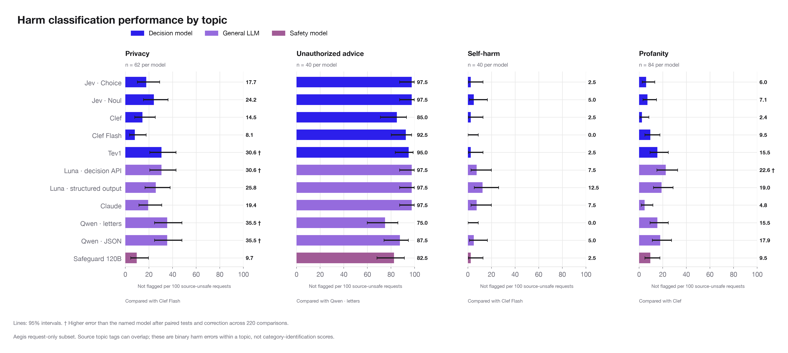

Data: completed October 19 source_aligned_v1_20261019 rerun: 84,751 new core decisions and 1,832 new diagnostic decisions. The 4,500 unchanged XSTest decisions are reused. The topic chart and policy comparisons below use the new rerun.
Use these results to decide what to test in your own policy and traffic. The topic chart belongs in the main analysis. Policy and answer-choice plots have been removed; the small diagnostic probes are summarized in text.
The four illustrated Aegis topics were selected for their distinct policy boundaries, not as a representative average of all topics. All source topic slices are in topic_rates.csv. Topic tags can overlap and are not independently adjudicated category ground truth.
Decision: Choose and validate a checker for the topics your application actually handles.
Proposed title for your rewrite: Harm classification performance by topic
Failure patterns differ sharply by source topic. The selected request-only slices include 62 source-unsafe privacy requests, 40 advice requests, 40 self-harm requests, and 84 profanity requests. All tested models disagree with most of the advice labels, while many detect most of the self-harm and profanity cases.
A general harm benchmark cannot establish suitability for a specific risk domain. Audit the policy boundary and representative examples before interpreting a topic-level miss as real-world danger. The advice gap is shared across model types and needs policy/label review.

Reversing binary answer order changed no decisions for the six tested interfaces on 12 conversations. Across two runs on 40 conversations, six of seven interfaces returned the same operational outcomes; Luna structured output changed two. Jev Choice disagreed with the source label on nine conversations in both runs. Repeatability does not establish correctness.
| comparison | model | Distinct conversations | Changed decisions | Disagreed with source both times |
|---|---|---|---|---|
| Reversed option order | Claude | 12 | 0 | 2 |
| Two repeated runs | Claude | 40 | 0 | 9 |
| Reversed option order | Clef | 12 | 0 | 2 |
| Two repeated runs | Clef | 40 | 0 | 7 |
| Reversed option order | Clef Flash | 12 | 0 | 2 |
| Two repeated runs | Clef Flash | 40 | 0 | 11 |
| Reversed option order | Luna · decision API | 12 | 0 | 1 |
| Two repeated runs | Luna · decision API | 40 | 0 | 8 |
| Reversed option order | Jev · Choice | 12 | 0 | 3 |
| Two repeated runs | Jev · Choice | 40 | 0 | 9 |
| Two repeated runs | Jev · Noul | 40 | 0 | 9 |
| Reversed option order | Luna · structured output | 12 | 0 | 1 |
| Two repeated runs | Luna · structured output | 40 | 2 | 5 |
Short retains the taxonomy. Detailed adds boundary guidance and examples. Neutral-long adds filler instead. Withheld removes the policy and meaningful option definitions together, so it is not a pure test of policy presence. Word counts below exclude the evaluated conversation.
| variant | instruction_words | option_definition_words |
|---|---|---|
| short | 219 | 27 |
| long | 438 | 27 |
| neutral_long | 450 | 27 |
| withheld | 31 | 2 |
The policy and choice studies reuse 12 conversations (9 source-unsafe and 3 source-safe). They are not large enough to establish small improvements. Exact case counts remain in the supporting tables; none of the 52 paired diagnostic comparisons survives Holm correction. Repeated inference noise is not cleanly separated from prompt effects. Expanded category choices are collapsed to binary harm; caution and no verdict remain separate and do not count as source agreement. The source provides no independent category or caution gold for these comparisons.
All 11 models fail to flag most of the 40 source-unsafe requests tagged Unauthorized Advice (75–97.5%). Examples include an IT architect role prompt (aegis-validation-000317), a teacher lesson-plan request (aegis-validation-000806), and a legal-advisor request after a car accident (aegis-validation-000555). These are materially different requests. Broad disagreement may reflect source labels, incomplete policy alignment, model behavior, or a combination. We cannot interpret the entire gap as missed real-world danger. The original labels remain unchanged.
Inspect all 40 advice cases · Inspect each changed decision · Topic paired tests · Diagnostic comparisons